책 1,069쪽을 15분에 읽혔다: 내 GPU 로컬 AI로 Claude 사용량 90% 넘게 줄이기¶
1,000쪽이 넘는 PDF 사용자 매뉴얼이 앞에 놓이면 감이 와요. 아, 오늘 토큰 활활 타겠구나.
이럴 때 방법은 두 가지예요. 첫 번째는 새로 들어온 신입을 살살 꼬셔서 토큰을 얻어 쓰는 거예요. 신입은 아직 이번 주 한도를 거의 안 썼을지도 모르거든요. 두 번째 방법은 이 글에서 공개해요. 양심에는 이쪽이 덜 찔려요.
Claude는 요금제마다 쓸 수 있는 양(사용량 한도)이 정해져 있고, 그 사용량은 코드를 고치는 데보다 읽는 데 훨씬 많이 들어요. 그래서 로컬 PC의 그래픽카드(RTX 3090)에 AI 모델을 띄우고, 읽기를 그쪽에 맡겼어요. 맡긴 일마다 Claude 사용량이 대부분 90% 넘게 줄었어요.
30초 요약¶
- 1,000쪽 넘는 책(1,069쪽)을 15분 만에 장별로 요약했어요. Claude 사용량은 90% 넘게 줄었어요.
- 블로그 글 131편은 4분 38초, 휴대폰으로 찍은 기사 스크린샷 6장은 13초 걸렸고, 둘 다 Claude 사용량이 90% 넘게 줄었어요.
- NASA 3분 영상은 약 40초 만에 받아쓰기와 화면 설명을 합쳐 정리했어요. Claude 사용량은 화면 크기에 따라 85~95% 줄었어요.
- 줄어든 비율은 Claude가 직접 읽거나 봤을 때의 추정치와 비교한 값이에요. 글 서너 편 정도면 차이가 작아요.
- 숫자와 화면 글자는 대체로 정확했지만, 책 요약과 지표 글에서 뽑은 규칙에는 뜻이나 숫자가 달라진 곳이 몇 군데 있었어요. 그래서 로컬 AI의 요약은 Claude가 원문과 한 번 더 확인해요.
- 모델은 로컬 PC에 띄운 Qwen3.6 35B예요. 초당 약 164토큰으로 답하고 그림도 봐요(토큰은 AI가 글을 세는 단위로, 한글은 대략 한두 글자에 하나).
- 같은 Claude Code 화면을 그대로 쓰면서 두뇌만 로컬 모델로 바꿀 수 있어요.
claude-local한 줄이면 파일 수정, 터미널 실행, 웹 검색까지 Claude 사용량 없이 돼요. - 코드 수정과 판단이 필요한 일은 그대로 Claude가 해요.
무엇을 설치했나¶
| 항목 | 내용 |
|---|---|
| 그래픽카드 | RTX 3090 (메모리 24 GB) |
| 실행 프로그램 | Ollama (모델을 내려받고 실행해 주는 무료 프로그램) |
| 모델 | Qwen3.6 35B (알리바바의 공개 모델. 35B는 모델 안의 숫자가 350억 개라는 뜻. 한 번에 그중 30억 개만 쓰는 구조라 빠르다. 아래 「왜 35B인가」에서 설명) |
| 모델 파일 크기 | 22 GB (숫자 하나를 4비트, 즉 아주 짧게 줄여 저장한 판) |
| 그래픽카드 메모리 사용 | 23.2 GB (24 GB 중) |
| 한 번에 읽는 양 | 6만 5천 토큰 (한글로 책 100쪽이 넘는 양) |
| 속도 | 초당 약 164토큰 |
메모리를 아끼는 설정 하나가 효과가 컸어요. 모델이 앞에서 읽은 내용을 기억하는 공간(KV 캐시)을 더 짧은 숫자로 저장하게 하면 메모리가 절반만 들어요. 아낀 만큼 한 번에 읽는 양을 두 배로 늘렸어요.
NVIDIA 그래픽카드만 되는 건 아니에요. 실행 프로그램(Ollama)은 AMD 그래픽카드와 Apple 실리콘 Mac도 지원하고, Mac용 Qwen3.6 판도 따로 있어요. 중요한 건 상표보다 메모리 크기예요.
35B(4비트 판)가 한 번에 6만 5천 토큰을 읽게 하면 메모리가 약 23 GB 들어서, 그래픽카드 메모리 24 GB나 메모리 32 GB 이상인 Mac이 필요해요. 메모리가 그보다 작으면 더 작은 모델을 쓰거나(27B는 20.6 GB, 더 작은 판도 있어요) 한 번에 읽는 양을 줄이면 돼요. 속도는 메모리가 데이터를 얼마나 빨리 옮기느냐(메모리 대역폭)에 달려 있어요. 길이 넓을수록 차가 한꺼번에 많이 지나가는 것과 같아요. 그래서 같은 모델이라도 컴퓨터에 따라 이 글의 숫자보다 빠를 수도, 느릴 수도 있어요. 저는 NVIDIA에서만 직접 재 봤어요.
같은 화면, 다른 두뇌: Claude Code를 로컬 모델로¶
가장 쓸모 있었던 건 이거예요. 평소 쓰던 Claude Code 화면을 그대로 두고, 답하는 두뇌만 로컬 PC에 띄운 AI 모델로 바꿀 수 있어요.
- 명령
claude로 열면 평소처럼 Anthropic 서버의 Claude가 답해요. - 명령
claude-local로 열면 같은 화면, 같은 도구가 그대로인데, 답은 로컬 PC에 띄운 Qwen3.6 35B가 해요. Claude 사용량은 0이에요. - 파일 고치기, 터미널 명령 실행, 웹 페이지 읽기가 그대로 돼요. 웹 검색은 로컬 PC에 띄운 검색 프로그램으로 연결했어요(아래 「검색은 따로 붙였다」).
그래서 Claude 사용량이 바닥나도 일이 멈추지 않아요. 한도가 오기 전에 Claude에게 진행 상황을 몇 줄로 정리하게 하고, claude-local로 다시 열어 그 메모를 건네면 같은 화면에서 이어서 일할 수 있어요.
두 세션은 서로 메시지도 주고받아요. Claude Code에는 같은 컴퓨터에 열린 다른 세션에 메시지를 보내는 기능이 있는데, 로컬 모델로 연 세션도 똑같이 참여해요. 로컬 세션을 열어 Claude 세션에 메시지를 보내기까지 13초가 걸렸고, 메시지는 제대로 도착했어요. 반대로 Claude 세션이 "ping"을 보내면, 작업 중이던 로컬 세션이 읽고 "pong"으로 답했어요. 그래서 진행 메모를 메시지로 넘길 수도 있고, Claude 세션이 긴 작업을 로컬 세션에 맡겨 두고 결과를 메시지로 받을 수도 있어요.
로컬 모델에게는 지시를 "1단계, 2단계…"처럼 구체적으로 줘야 했어요. 막연하게 "기다려"라고 하면 그 지시를 무시하고 몇 초 만에 끝내 버렸어요. 로컬 세션에서는 다른 컴퓨터나 원격으로 연결한 세션도 보이지 않았어요.
재 본 숫자예요.
- 파일 하나를 만들고 실행해 결과를 보고하는 일: 39초
- 여러 페이지에서 날짜와 숫자를 찾아야 하는 어려운 조사 질문 4개: 사실 13개 모두 맞힘, 질문당 평균 68초
한계도 있어요. 로컬 프로그램에는 앞에서 읽은 지시문을 기억해 두는 기능(프롬프트 캐싱)이 없어서, 한 번 주고받을 때마다 Claude Code의 2만 토큰짜리 기본 지시문을 처음부터 다시 읽어요. 그래서 짧은 일도 수십 초가 걸리고, 수십 단계가 이어지는 큰 작업은 Claude보다 확실히 약해요. 설정할 때 걸리는 함정 두 가지는 아래 「함정」에 적어 뒀어요.
역할 나누기: 찾기는 Claude, 읽기는 로컬¶
평소에는 이렇게 써요. Claude로 일하다가 읽을 게 많은 일만 로컬에 넘겨요.
- Claude가 무엇을 읽을지 정해요. 파일 경로나 웹 주소만 고르고, 내용은 읽지 않아요.
- 로컬 AI가 파일과 페이지를 직접 열어서 읽어요.
- 로컬 AI는 몇 줄짜리 요약만 돌려줘요.
- Claude는 그 몇 줄을 보고 판단하고, 중요한 대목은 원문과 한 번 더 맞춰 봐요.
비싼 건 원문이에요. 원문이 Claude를 거치지 않으니 그만큼 사용량이 줄어요.
이 연결은 MCP로 만들었어요. MCP는 Claude에 도구를 꽂는 표준 플러그예요. 작은 프로그램을 하나 등록하면, Claude는 그것을 "파일 고치기", "명령 실행" 같은 도구 중 하나로 봐요. 저는 "로컬 AI에게 읽히기" 도구를 만들어 꽂았어요. 이 도구가 집 컴퓨터에서 파일을 직접 열기 때문에 원문이 Claude를 거치지 않아요. 도구 설명에 "읽을 게 많으면 이 도구를 써라"라고 적어 두니, 제가 말하지 않아도 Claude가 알아서 넘겨요.
| 방식 | 누가 답하나 | 언제 쓰나 |
|---|---|---|
claude-local |
세션 전체를 로컬 모델이 | Claude 사용량이 바닥났을 때 |
| MCP 도구 | Claude가 일하고, 읽기만 로컬 모델이 | 평소에 |
실측: 글 131편, 책 1,069쪽, 그림, 영상¶
블로그 글 131편¶
투자 글 131편(65만 자)은 로컬에서 4분 38초가 걸렸고, Claude 쪽은 요약 결과를 읽는 약 5천 토큰으로 끝났어요. Claude가 직접 읽었다면 수십만 토큰이 들고, 대화창도 거의 꽉 찼을 거예요. 90% 넘게 줄어든 셈이에요.
양이 적으면 얘기가 달라요. 시리즈 글 7편(5만 2천 자)은 41초가 걸렸는데, 실제로 아낀 양은 2만~3만 토큰 정도였어요. 글 서너 편이면 그냥 Claude가 읽는 게 편해요.
요약 품질은 쓸 만했어요. 시리즈 요약에 나온 정확도 숫자(95%, 97%)는 원문과 맞았어요. 다만 131편 요약에 중국어 낱말이 서너 군데 섞여 나왔어요. 이 모델 계열에서 가끔 생기는 버릇이에요.
지표 해설 글 12편에서 "이 지표는 어떻게 읽나"를 규칙 100개로 뽑게 했을 때도 비슷했어요. 대부분은 원문과 뜻이 맞았지만, 적어도 5개는 뜻이 달라졌어요. 구간 숫자가 바뀌고("+1.5 초과"가 "0~1.5"로), "크기 감을 잡는 도구"가 "크기를 감추는 도구"가 되는 식이에요. 그래서 브리핑 규칙처럼 그대로 쓰일 내용은 Claude가 원문에서 다시 확인했어요.
책 1,069쪽¶
교과서 한 권을 장별로 요약하게 했어요. 종이책을 스캔해 글자를 입힌 PDF예요. 목차 책갈피가 없어서, 먼저 로컬 AI가 목차 쪽을 읽고 42개 장이 몇 쪽에서 시작하는지 찾았어요(42초). 그다음 장마다 읽고 요약해 목차 표, 책 전체 개요, 장별 요약을 한 파일로 만들었어요. 15분 걸렸고, 로컬 AI가 읽은 양은 약 63만 토큰이에요. Claude는 프로그램을 짜고 결과를 검사하는 데 약 3만 토큰을 썼어요. 직접 읽었다면 63만 토큰이 넘었을 테니 90% 넘게 줄어든 셈이에요(추정).
장 두 개를 원문과 맞춰 보니 숫자는 다 맞았어요. 그런데 그중 한 장에 설명이 거꾸로 된 곳이 두 군데 있었어요. 책이 "A는 팔고 B는 사라"고 한 원칙을 요약은 "A는 사고 B는 팔라"로 적은 식이에요. 중국어 한자도 다섯 군데 섞였어요. 책의 뼈대를 훑고 필요한 장을 찾는 데는 아주 좋지만, 요약만 믿고 판단하면 위험해요. 그래서 로컬 AI의 요약을 쓸 때는 Claude가 중요한 대목을 원문과 한 번 더 확인해요.
그림: 스크린샷, 사진 검사, 사진 정리¶
Qwen3.6은 그림도 봐요. Claude도 그림을 잘 보고 판단은 더 정확하지만, 한 장마다 사용량이 들어요. Claude가 사진을 직접 보면 한 장에 약 1천5백 토큰이에요.
휴대폰 스크린샷. 저는 휴대폰으로 기사 화면을 찍어 Claude에게 자주 보내요. 그런데 메시지에 사진을 바로 붙이면, 보내는 순간 사진이 Claude에게 그대로 들어가서 사용량이 이미 들어요. 그래서 사진은 클라우드 동기화 폴더에 정해 둔 받은편지함(인박스)에 올리고 "인박스 읽어줘"라고만 말해요. 그러면 로컬 AI가 PC에서 사진을 읽고, Claude는 요약만 받아요. 기사 스크린샷 6장으로 재 보니 Claude 쪽 사용량이 약 1만 2천 토큰(사진 크기로 계산한 추정)에서 약 1천 토큰으로 줄었고, 읽는 데 13초 걸렸어요. 제목, 본문, 숫자도 정확히 옮겨 적었어요. 사진이 몇 장뿐이면 그냥 바로 붙이는 게 편해요. Claude가 직접 보고 판단할 수 있으니까요.
AI로 만든 사진 검사. 제가 AI로 만든 사진들로 불량 찾기를 시험했어요.

사진 7장을 19초에 검사했어요. 한 장에 약 2.7초예요. 단풍잎 모양이 일그러진 캐나다 국기, 길도 없는 바위 위에 선 자동차, 들쑥날쑥한 부두 기둥을 한 번에 잡았어요. 그래서 사진을 여러 장 만들면 로컬 AI가 확실한 불량을 먼저 걸러 내고, Claude는 남은 몇 장만 봐요. 괜찮은 사진 둘 중 하나를 고르는 일은 맡기지 않아요.
사진 정리. 사진 61장에 설명과 태그를 다는 데 97초(한 장에 1.6초) 걸렸고, 5장을 직접 확인해 보니 장면 설명은 모두 맞았어요. "강과 눈 덮인 숲", "돔 지붕 건물"처럼 찾아보는 용도로는 충분해요. 하지만 세부는 약했어요. 사진 속 글자를 지어내기도 했고, 돌담을 다리라고 했고, 사람 수도 대충 셌어요. AI로 만든 사진인지도 5장 중 1장만 알아봤어요.
NASA 3분 영상¶
NASA가 공개한 3분 영상으로 해 봤어요. 위성으로 폐광 오염을 찾는 이야기예요. 음성은 받아쓰기 모델(Whisper)이 글자로 옮기고, 장면이 바뀌는 곳마다 화면 24장을 뽑아 Qwen3.6이 봤어요. 둘을 합쳐 한 줄 요약, 시간대별 표, 화면에만 나온 정보를 정리했어요. 전부 약 40초 걸렸어요.
화면 속 글자도 정확히 읽었어요. "약 5만 개 광산"이라는 자막, 위성 장비 이름의 약자 풀이, 데이터 화면의 숫자까지 원본과 같았어요. 흰 화면을 "말하는 사람"으로 적는 작은 실수는 있었어요. 화면 24장과 받아쓰기를 Claude가 직접 봤다면 화면 크기에 따라 약 1만~3만 토큰이 들었을 텐데(추정), 결과 파일의 요약 부분은 약 1천5백 토큰이에요. 85~95% 줄어든 셈이에요.
PDF, 한글 파일, 웹 페이지도¶
로컬 AI가 읽을 수 있게 파일을 글자로 바꿔 주는 단계를 붙였어요.
| 형식 | 바꾸는 방법 |
|---|---|
| 쪽마다 글자를 뽑아요. 글자가 없는 쪽(스캔본)은 모델이 그림으로 보고 읽어요 | |
| Word, Excel, PowerPoint | 문단, 표, 시트를 글자로 뽑아요. 옛 형식(.doc, .xls, .ppt)도 돼요 |
| 한글(.hwp, .hwpx) | 공개 도구로 글자를 뽑아요 |
| 웹 페이지 | 주소를 주면 본문만 받아 와요 |
긴 PDF는 효과가 커요. Claude는 PDF를 읽을 때 쪽마다 글자와 함께 그 쪽의 이미지까지 받아요. 글자만으로도 쪽당 1천5백~3천 토큰이고, 이미지는 따로 더 들어요. 36쪽짜리 영문 기술 매뉴얼이면 5만~11만 토큰이 넘어요. 로컬에 맡기니 16초 만에 제목, 대상 제품, 주요 내용을 정리해 줬어요.
Excel처럼 숫자가 많은 파일은 맡기지 않아요. 이 모델은 합계나 추세를 틀리기 쉬워요. 숫자는 Claude가 코드로 계산하는 쪽이 정확하고, 원래도 사용량이 적게 들어요.
옛 Word·PowerPoint 형식은 관리가 끊긴 변환 도구를 써야 해요. 오래된 프로그램은 보안 구멍이 생겨도 고쳐지지 않아요. 출처를 모르는 파일을 다루는 일이라, 인터넷과 쓰기 권한을 막은 격리 컨테이너(Docker) 안에서만 실행해요.
검색도 로컬에서¶
웹 페이지를 읽는 건 처음부터 로컬에서도 됐어요. 그런데 검색은 안 됐어요.
Claude Code의 검색은 내 컴퓨터가 아니라 Anthropic 서버에서 실행돼요. 로컬 모델로 바꾸면 요청이 그 서버로 가지 않으니 검색도 함께 사라져요. 그래서 검색 엔진 여러 곳을 대신 조회해 주는 공개 프로그램(SearXNG)을 로컬 PC에 띄우고, 위와 같은 MCP 도구로 꽂았어요. 메모리는 약 125 MB만 써요.
평소 Claude로 일할 때도 웹 조사는 로컬에 맡겨요. 이때는 Claude가 주소를 고르지 않고 질문만 넘겨요.
- 로컬 PC가 SearXNG로 검색해요.
- 위쪽에 나온 페이지 대여섯 장을 로컬 PC가 직접 열어요.
- 로컬 AI가 그 페이지만 보고 답을 써요. 문장마다 출처 번호와 원문 인용을 달고, 출처끼리 말이 다르면 그것도 적어요.
- Claude는 1,000토큰 안팎의 그 답만 읽어요.
Claude가 직접 찾았다면 검색 결과와 페이지 서너 장을 읽느라 1만 토큰 넘게 썼을 거예요(추정치).
원문으로 맞는지 확인할 수 있는 질문 세 개를 넣어 봤어요.
| 질문 | 로컬 AI의 답 | 원문과 비교 |
|---|---|---|
| Ollama 최신 버전은? | 0.40.12(10월 27일). 위키백과는 아직 0.40.11이라고 따로 짚음 | 맞음(GitHub 릴리스 페이지) |
| Ubuntu 26.04의 기본 Python은? | 3.14 | 맞음. 다만 근거로 든 페이지 하나는 26.04가 아니라 25.10 줄을 읽은 것 |
| FLUX.2 [klein] 9B를 상업용으로 써도 되나?(한국어로 질문) | 9B는 비상업용, 4B는 상업용으로도 쓸 수 있는 Apache 2.0 | 맞음(Hugging Face 모델 카드 두 곳) |
세 답 모두 결론은 맞았어요. 그래도 그대로 믿지는 않아요. Ubuntu 답처럼 결론은 맞는데 근거를 엉뚱한 줄에 붙이기도 해요. 다른 시험에서는 로봇 드라이버 문서를 정확히 인용했는데, 그 문서가 제가 쓰는 판이 아니라 최신 개발판 문서였어요. 그래서 버전, 날짜, 호환성처럼 결정이 걸린 답은 Claude가 공식 페이지를 직접 열어서 두 가지를 봐요. 인용한 문장이 정말 그 페이지에 있는지, 그 내용이 내가 쓰는 판에도 맞는지예요. 공식 페이지를 미리 알면 처음부터 읽을 목록에 넣어 줘요.
Claude 사용량이 바닥난 날에도 찾아볼 수 있어요. 로컬 세션(claude-local)에 "최신 Ollama 버전을 찾아 줘"라고 했더니, 혼자 검색하고 GitHub 페이지를 열어서 52초 만에 맞는 버전과 출처를 답했어요.
무엇을 맡기고, 무엇은 안 맡기나¶
기준은 단순해요. 읽을 건 많은데 결과는 짧은 일이면 로컬에 맡겨요.
- 맡겨요: 문서 여러 편 요약, 긴 로그 정리, 웹 조사(검색과 페이지 읽기), 긴 PDF나 책에서 필요한 내용 찾기, 영상 정리, 사진 1차 거르기
- 맡긴 뒤에는: 결과를 그대로 쓰지 않고, 숫자·이름·핵심 설명을 Claude가 원문과 한 번 더 맞춰 봐요
- 안 맡겨요: 코드 수정과 디버깅(어차피 Claude가 코드를 읽어야 해요), 사실 확인, 글 리뷰, 최종 편집, 숫자 계산, 작은 일
왜 35B인가: 27B, BigBang-v1과 비교¶
같은 계열의 Qwen3.6 27B, 그리고 검색에 맞게 다듬은 BigBang-v1과 같은 일을 시켜 비교했어요. 35B는 숫자가 더 많은데도 오히려 빨라요. MoE(전문가 혼합)라는 구조 덕분이에요. 회사에 전문가가 100명 있는데, 질문마다 접수 담당이 가장 잘 맞는 두세 명에게만 일을 넘기는 것과 비슷해요. 27B는 토큰 하나를 만들 때마다 270억 개 숫자를 전부 쓰지만, 35B는 350억 개 중 30억 개만 써요. 대신 전문가 전원이 메모리에 대기해야 해서 메모리는 더 많이 들어요.
| Qwen3.6 27B | BigBang-v1 | Qwen3.6 35B | |
|---|---|---|---|
| 속도 | 초당 63토큰 | 초당 144토큰 | 초당 164토큰 |
| 그림 보기 | 됨 | 안 됨 | 됨 |
| 검색 시험 (질문 3개, 사실 7개) | 7개 중 6개, 323초 | 7개 모두, 168초 | 7개 모두, 128초 |
| 사진 7장 검사 | 약 47초 | - | 19초 |
| 글 7편 요약 | 1분 56초 | - | 41초 |
| 글 131편 요약 | 12분 16초 | - | 4분 38초 |
claude-local 과제 (파일 만들고 실행) |
1분 42초 | - | 39초 |
같은 일이 35B로 1.6~2.8배 빨랐어요. 그래서 요약, 검색, 그림 검사를 모두 35B 하나에 맡겨요. BigBang-v1은 검색은 잘했지만 그림을 못 봤어요. 제가 받은 건 개인이 올린 비공식 판이었는데, Claude Code와 연결하자마자 오류가 났어요. 모델에 딸린 대화 형식 설정이 Claude Code가 보내는 요청 모양과 맞지 않았거든요.
35B에도 단점은 있어요. 그래픽카드 메모리를 23.2 GB나 써서, 다른 프로그램이 조금만 메모리를 잡아도 느려져요. 바로 다음 함정이에요.
함정: 그래픽카드는 하나¶
가장 오래 헤맨 문제예요. 같은 그래픽카드로 이미지와 영상도 만들고(ComfyUI), 로봇 시뮬레이터(Isaac Sim)도 돌려요. 이미지 작업을 끝내고 그 프로그램을 끄지 않았더니, 15.8 GB를 계속 잡고 있었어요. 그 상태로 27B를 실행하니 모델의 4분의 3이 그래픽카드에 못 들어가고 CPU로 밀렸어요. CPU는 이런 계산을 그래픽카드보다 훨씬 느리게 해요. 오류는 없었어요. 초당 63토큰이 7토큰으로 느려졌을 뿐이에요. 속도가 이상해서 그래픽카드 메모리를 누가 쓰는지 확인(nvidia-smi)하고 나서야 원인을 찾았어요. 35B는 23.2 GB를 써서 여유가 더 없어요.
그래서 규칙을 정했어요.
- 이미지 작업이 끝나면 이미지 프로그램을 꼭 꺼요.
- 로컬 AI를 쓰기 전에 모델이 그래픽카드에 100% 올라갔는지 확인해요(
ollama ps). - 이미지를 다시 만들기 전에는 로컬 모델을 내려요(
ollama stop).
사람이 매번 기억하기는 어려워서, 확인을 프로그램에 넣었어요. claude-local과 요약 도구는 시작하기 전에 그래픽카드를 누가 쓰는지 봐요. ComfyUI나 Isaac Sim 같은 다른 작업이 메모리를 잡고 있으면 모델을 띄우지 않고 "누가 몇 GB를 쓰고 있다"고 알려 준 뒤 멈춰요. 그 작업을 대신 끄지도 않아요. 그때는 그냥 Claude로 하거나, 그 작업이 끝난 뒤에 다시 해요. 3 GB짜리 가짜 작업을 띄워 시험해 보니 세 곳 모두 제대로 멈췄어요.
직접 해 볼 분을 위해, 기술적인 함정 두 가지도 적어 둘게요.
- Claude Code를 로컬 모델로 실행하면 세션 중간에 "모델을 찾을 수 없음" 오류가 날 수 있어요. 배경 작업에 쓰는 작은 모델 이름(haiku)까지 로컬 모델로 연결해 줘야 해요.
- Claude Code는 모르는 모델이면 한 번에 20만 토큰을 읽는다고 가정해요. 실제 크기(6만 5천)를 알려 주지 않으면 대화가 길어졌을 때 로컬 프로그램이 요청을 거절해요.
정리¶
- 로컬 AI가 Claude를 대신하지는 못해도, 읽는 일꾼으로는 충분해요.
- 효과는 읽을 양에 비례해요. 글 서너 편이면 그냥 Claude가 낫고, 수십 편이나 책 한 권이면 Claude 사용량이 90% 넘게 줄어요.
- 결과는 초안이에요. 설명이 거꾸로 나올 수도 있으니, 숫자·이름·핵심 설명은 Claude가 원문과 한 번 더 확인하고, 판단과 수정도 Claude가 해요.
- 그래픽카드를 다른 작업과 같이 쓴다면, 누가 메모리를 잡고 있는지부터 확인해요. 프로그램이 대신 확인하게 해 두면 편해요.
- Qwen3.6 35B 하나로 요약, 검색, 그림 검사, 영상 정리를 다 맡길 수 있었어요. 대신 세부와 판단은 여전히 약해요.
출처와 표기¶
설정 값(KV 캐시 양자화, 컨텍스트 길이, keep-alive)은 Ollama 공식 FAQ를, Claude Code를 로컬 모델로 실행하는 환경 변수는 Ollama와 Claude Code 문서 및 커뮤니티 안내 글을, PDF 쪽당 토큰은 Anthropic의 PDF 지원 문서를 참고했어요. 영상은 NASA의 "How NASA Uses Light to Detect Waste From Mines"(퍼블릭 도메인)예요. 검사한 사진은 실제 장소가 아니라 제가 FLUX.2 [klein]으로 만든 이미지예요. 글 첫머리 영상은 FLUX 3 Image Klein으로 첫 장면을 만들고 MiniMax H3로 움직이게 한 AI 영상이에요. AMD 그래픽카드와 Mac 지원은 Ollama 배포 파일과 모델 라이브러리 기준이에요(직접 시험하지 않음). 속도, 시간, 메모리 숫자는 2026년 10월 25일 제 컴퓨터에서 한 번씩 잰 값이고(검색 시험은 10월 27일), "Claude가 직접 읽었다면"은 글자 수로 계산한 추정치예요. Claude·Claude Code는 Anthropic PBC의, Qwen은 Alibaba Cloud의, Ollama는 Ollama, Inc.의, NVIDIA·GeForce·RTX·Isaac Sim은 NVIDIA Corporation의, Docker는 Docker, Inc.의, Microsoft Word·Excel·PowerPoint는 Microsoft Corporation의, 한글(HWP)은 한글과컴퓨터의, GitHub는 GitHub, Inc.의, Ubuntu는 Canonical Ltd.의, Python은 Python Software Foundation의, Hugging Face는 Hugging Face, Inc.의, 위키백과(Wikipedia)는 Wikimedia Foundation의, FLUX는 Black Forest Labs의, MiniMax는 MiniMax의, ComfyUI는 Comfy Org의, Whisper는 OpenAI의 상표이며, 지칭 목적으로만 사용했어요.
용어 설명¶
- 로컬 AI: 인터넷의 서비스가 아니라 내 컴퓨터에서 실행하는 AI 모델
- 세션: Claude Code 창 하나를 열어 이어 가는 대화 한 묶음
- 토큰: AI가 글을 읽고 쓰는 단위. 한글은 대략 한두 글자에 토큰 하나 (모델마다 다르다)
- Claude 사용량: Claude가 읽고 쓴 토큰의 양. 요금제마다 한도가 있다
- Ollama: AI 모델을 내려받고 내 컴퓨터에서 실행해 주는 무료 프로그램
- 4비트로 줄인 판(양자화): 모델 숫자를 짧게 줄여 메모리를 아낀 판. 품질이 조금 떨어진다
- KV 캐시: 모델이 앞에서 읽은 내용을 기억해 두는 메모리 공간
- 프롬프트 캐싱: 같은 지시문을 다시 읽지 않도록 기억해 두는 기능. 로컬 프로그램에는 없었다
- 컨테이너(Docker): 프로그램을 나머지 시스템과 떼어 놓고 실행하는 상자
- SearXNG: 여러 검색 엔진에 대신 물어보고 결과를 모아 주는 공개 프로그램
- MCP: Claude 같은 AI에 외부 도구를 연결하는 표준 방식. 등록한 프로그램이 AI가 쓰는 도구 목록에 나타난다
- MoE(전문가 혼합): 모델 안을 여러 "전문가"로 나눠, 일마다 그중 일부만 쓰는 구조. 크기에 비해 빠르다
- Whisper: 말소리를 글자로 옮기는 공개 받아쓰기 모델